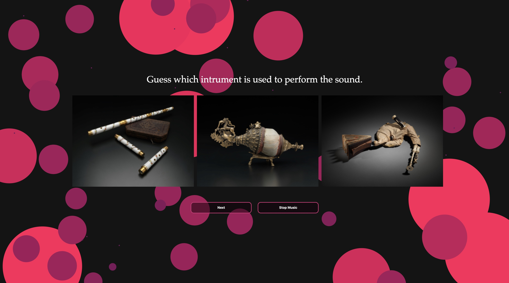
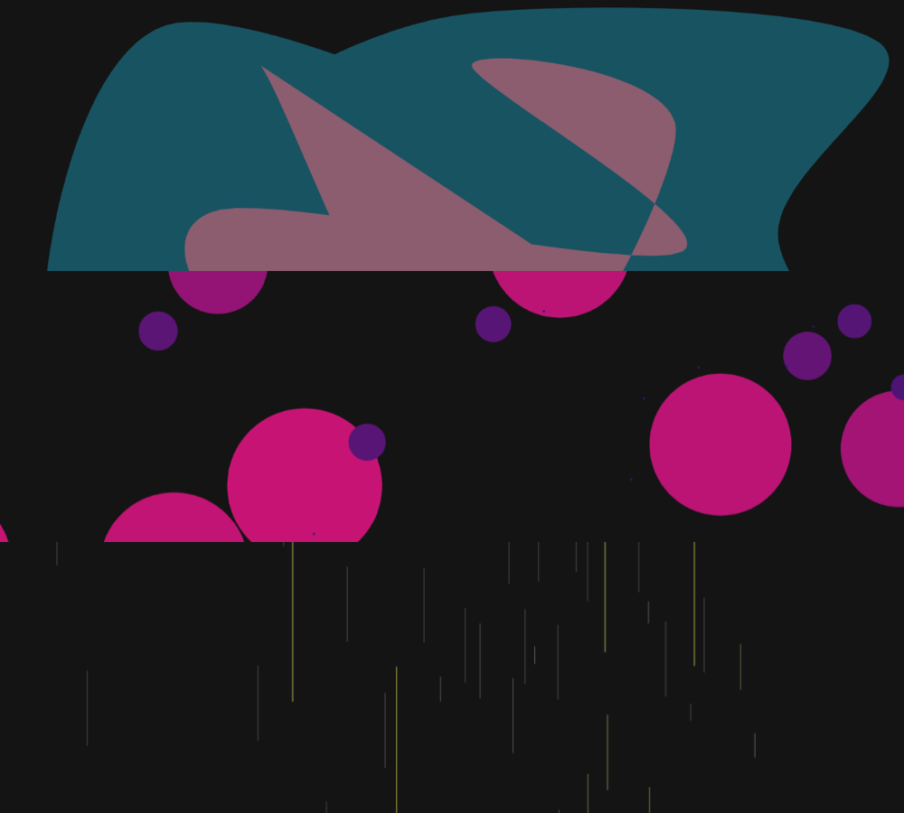
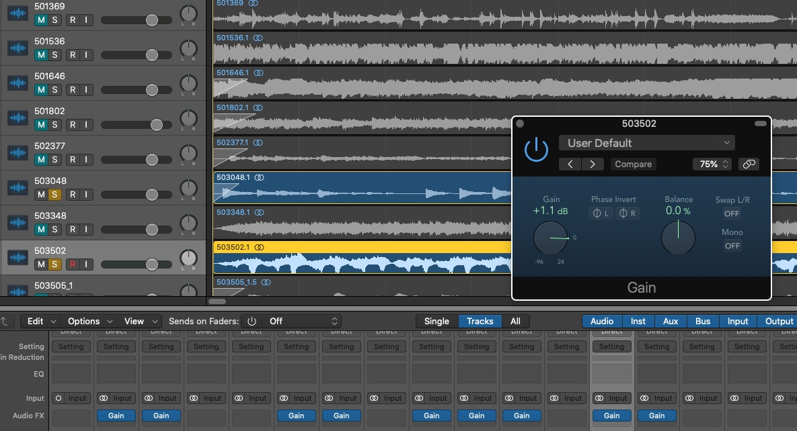

A Web Experience by Dan Ran
This is an interactive project based on Met's instruments collection. The project aims to provide the audience with a sensual association between the 24 instruments and their sounds.
Each round, the application will randomly pick three instruments. The user will need to listen to a sound clip and try to figure out which type of instrument is used to perform the music.
The sound's frequency is visualized by using three different visualizations.
The sound clips used in this project are only for the purpose of education and proof of concept. Please don’t hesitate to reach out if you have any questions. All the sounds are cut and tuned in Logic Pro.

Partner: The Metropolitan Museum of Art
Data Source: The Met Collection API
Date: 2019